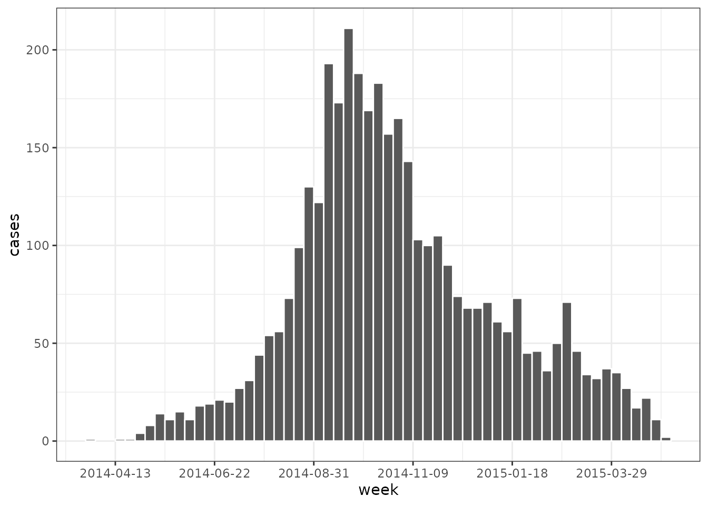
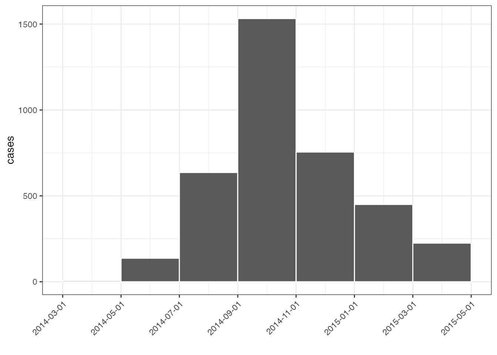
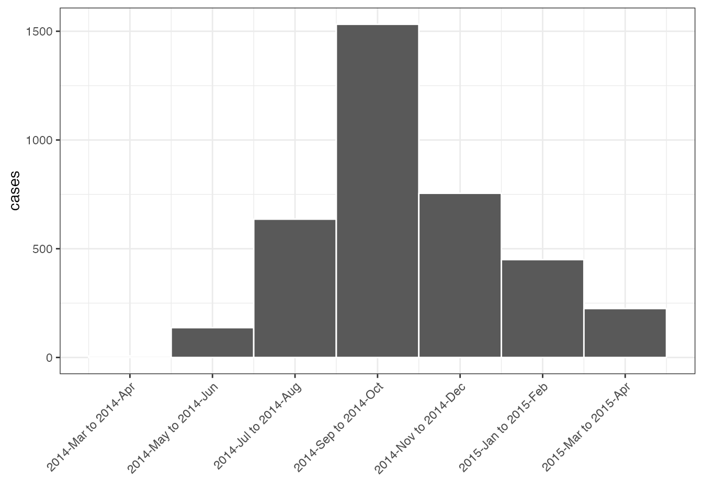
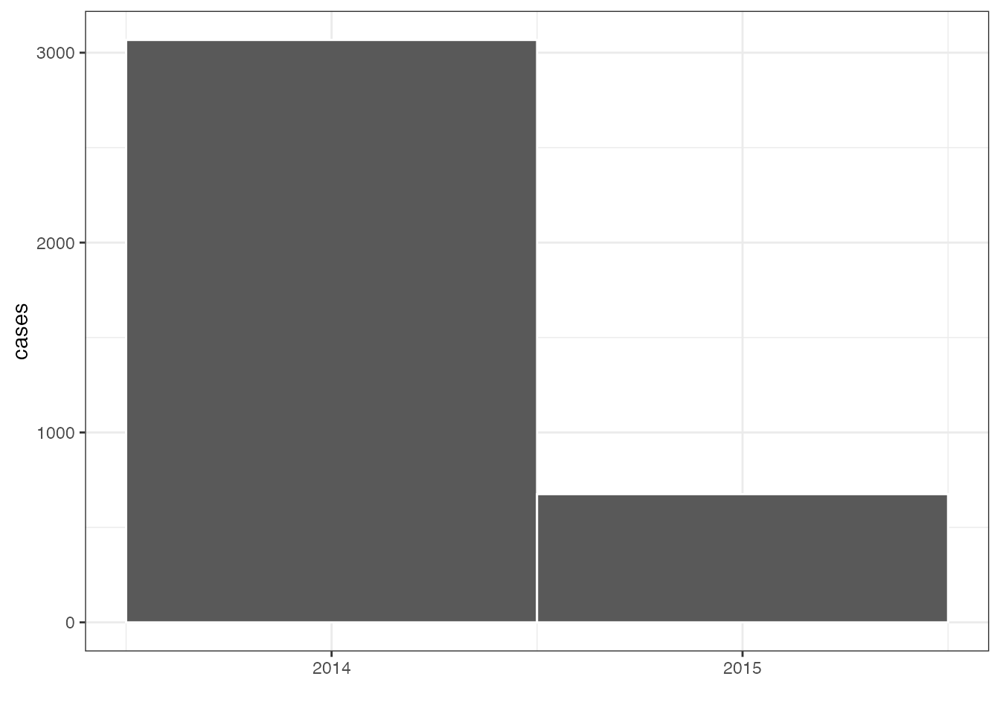

Overview
grates makes it easy to perform common date grouping operations and provides multiple grouped date classes for users to work with including grates_yearweek, grates_month, grates_quarter, grates_year, grates_period and grates_int_period. These classes aim to formalise the idea of a grouped date whilst also being intuitive in their use. They build upon ideas of Davis Vaughan and the unreleased datea package.
grates_yearweek
as_yearweek() allows you to create x, the date vector you wish to group and firstday, the day of the week you wish your weeks to start on; (this defaults to 1 (Monday) and can go up to 7 (Sunday)). The first week of the year is then defined as the first week containing 4 days in the new calendar year. This means that the calendar year can sometimes be different to that of the yearweek object.
# create weekday names
wdays <- weekdays(as.Date(as_yearweek(as.Date("2020-01-01"), firstday = 1L)) + 0:6)
wdays <- setNames(1:7, wdays)
# example of how weeks vary by firstday over December and January
dates <- as.Date("2020-12-29") + 0:5
dat <- lapply(wdays, function(x) as_yearweek(dates, x))
bind_cols(dates = dates, dat)
#> # A tibble: 6 x 8
#> dates Monday Tuesday Wednesday Thursday Friday Saturday Sunday
#> <date> <yrwk> <yrwk> <yrwk> <yrwk> <yrwk> <yrwk> <yrwk>
#> 1 2020-12-29 2020-W53 2021-W01 2020-W52 2020-W52 2020-W52 2020-W52 2020-W53
#> 2 2020-12-30 2020-W53 2021-W01 2021-W01 2020-W52 2020-W52 2020-W52 2020-W53
#> 3 2020-12-31 2020-W53 2021-W01 2021-W01 2021-W01 2020-W52 2020-W52 2020-W53
#> 4 2021-01-01 2020-W53 2021-W01 2021-W01 2021-W01 2021-W01 2020-W52 2020-W53
#> 5 2021-01-02 2020-W53 2021-W01 2021-W01 2021-W01 2021-W01 2021-W01 2020-W53
#> 6 2021-01-03 2020-W53 2021-W01 2021-W01 2021-W01 2021-W01 2021-W01 2021-W01We make working with yearweek and other grouped date objects easier by adopting logical conventions:
dates <- as.Date("2021-01-01") + 0:30
weeks <- as_yearweek(dates, firstday = 5) # firstday = 5 to match first day of year
head(weeks, 8)
#> <grates_yearweek[8]>
#> [1] 2021-W01 2021-W01 2021-W01 2021-W01 2021-W01 2021-W01 2021-W01 2021-W02
str(weeks)
#> yrwk [1:31] 2021-W01, 2021-W01, 2021-W01, 2021-W01, 2021-W01, 2021-W01, 20...
#> @ firstday: int 5
dat <- tibble(dates, weeks)
# addition of wholenumbers will add the corresponding number of weeks to the object
dat %>%
mutate(plus4 = weeks + 4)
#> # A tibble: 31 x 3
#> dates weeks plus4
#> <date> <yrwk> <yrwk>
#> 1 2021-01-01 2021-W01 2021-W05
#> 2 2021-01-02 2021-W01 2021-W05
#> 3 2021-01-03 2021-W01 2021-W05
#> 4 2021-01-04 2021-W01 2021-W05
#> 5 2021-01-05 2021-W01 2021-W05
#> 6 2021-01-06 2021-W01 2021-W05
#> 7 2021-01-07 2021-W01 2021-W05
#> 8 2021-01-08 2021-W02 2021-W06
#> 9 2021-01-09 2021-W02 2021-W06
#> 10 2021-01-10 2021-W02 2021-W06
#> # … with 21 more rows
# addition of two yearweek objects will error as it is unclear what the intention is
dat %>%
mutate(plus4 = weeks + weeks)
#> Error: Problem with `mutate()` column `plus4`.
#> ℹ `plus4 = weeks + weeks`.
#> ✖ <grates_yearweek> + <grates_yearweek> is not permitted
# Subtraction of wholenumbers works similarly to addition
dat %>%
mutate(minus4 = weeks - 4)
#> # A tibble: 31 x 3
#> dates weeks minus4
#> <date> <yrwk> <yrwk>
#> 1 2021-01-01 2021-W01 2020-W49
#> 2 2021-01-02 2021-W01 2020-W49
#> 3 2021-01-03 2021-W01 2020-W49
#> 4 2021-01-04 2021-W01 2020-W49
#> 5 2021-01-05 2021-W01 2020-W49
#> 6 2021-01-06 2021-W01 2020-W49
#> 7 2021-01-07 2021-W01 2020-W49
#> 8 2021-01-08 2021-W02 2020-W50
#> 9 2021-01-09 2021-W02 2020-W50
#> 10 2021-01-10 2021-W02 2020-W50
#> # … with 21 more rows
# Subtraction of two yearweek objects gives the difference in weeks between them
dat %>%
mutate(plus4 = weeks + 4, difference = plus4 - weeks)
#> # A tibble: 31 x 4
#> dates weeks plus4 difference
#> <date> <yrwk> <yrwk> <int>
#> 1 2021-01-01 2021-W01 2021-W05 4
#> 2 2021-01-02 2021-W01 2021-W05 4
#> 3 2021-01-03 2021-W01 2021-W05 4
#> 4 2021-01-04 2021-W01 2021-W05 4
#> 5 2021-01-05 2021-W01 2021-W05 4
#> 6 2021-01-06 2021-W01 2021-W05 4
#> 7 2021-01-07 2021-W01 2021-W05 4
#> 8 2021-01-08 2021-W02 2021-W06 4
#> 9 2021-01-09 2021-W02 2021-W06 4
#> 10 2021-01-10 2021-W02 2021-W06 4
#> # … with 21 more rows
# weeks can be combined if they have the same firstday but not otherwise
wk1 <- as_yearweek("2020-01-01")
wk2 <- as_yearweek("2021-01-01")
c(wk1, wk2)
#> <grates_yearweek[2]>
#> [1] 2020-W01 2020-W53
wk3 <- as_yearweek("2020-01-01", firstday = 2)
c(wk1, wk3)
#> Error: Can't combine <grates_yearweek>'s with different `firstday`For each date group we also provide associated ggplot2 scales for the x-axis:
dat <- ebola_sim_clean$linelist
week_plot <-
dat %>%
mutate(week = as_yearweek(date_of_infection), firstday = 7) %>%
count(week, name = "cases") %>%
na.omit() %>%
ggplot(aes(week, cases)) + geom_col(width = 1, colour = "white") + theme_bw()
week_plot
We can have date labels on the x_axis by utilising scale_x_grate_yearweek:
week_plot + scale_x_grates_yearweek(format = "%Y-%m-%d", firstday = 7)
grates_month
as_month allows users to group by a fixed number of months. As arguments it takes, x, the date vector you wish to group, n, the number of months you wish to group by (defaulting to 1) and, finally, origin, an optional value indicating where you would like to start your periods from relative to the Unix Epoch (1970-01-01). By default the provided scale creates a histogram-like plot (unlike a histogram the widths of the intervals in the plot are identical across months) but can be changed to have centralised labelling.
month_dat <-
dat %>%
mutate(date = as_month(date_of_infection, n = 2)) %>%
count(date, name = "cases") %>%
na.omit()
month_plot <-
ggplot(month_dat, aes(date, cases)) +
geom_col(width = 2, colour = "white") +
theme_bw() +
theme(axis.text.x = element_text(angle = 45, hjust=1)) +
xlab("")
month_plot
month_plot +
scale_x_grates_month(
format = NULL,
n = 2,
origin = 0
)
grate_quarter and grate_year
as_quarter() and as_year() behave similarly to as_yearweek() with the main difference main being that they have no need for a firstday argument:
# create weekday names
dates <- seq(from = as.Date("2020-01-01"), to = as.Date("2021-12-01"), by = "1 month")
as_quarter(dates)
#> <grates_quarter[24]>
#> [1] 2020-Q1 2020-Q1 2020-Q1 2020-Q2 2020-Q2 2020-Q2 2020-Q3 2020-Q3 2020-Q3
#> [10] 2020-Q4 2020-Q4 2020-Q4 2021-Q1 2021-Q1 2021-Q1 2021-Q2 2021-Q2 2021-Q2
#> [19] 2021-Q3 2021-Q3 2021-Q3 2021-Q4 2021-Q4 2021-Q4
as_year(dates)
#> <grates_year[24]>
#> [1] 2020 2020 2020 2020 2020 2020 2020 2020 2020 2020 2020 2020 2021 2021 2021
#> [16] 2021 2021 2021 2021 2021 2021 2021 2021 2021
as_quarter(dates[1]) + 0:1
#> <grates_quarter[2]>
#> [1] 2020-Q1 2020-Q2
as_year(dates[1]) + 0:1
#> <grates_year[2]>
#> [1] 2020 2021Again we provide ggplot2 scales for the x-axis:
dat %>%
mutate(date = as_quarter(date_of_infection)) %>%
count(date, name = "cases") %>%
na.omit() %>%
ggplot(aes(date, cases)) +
geom_col(width = 1, colour = "white") +
scale_x_grates_quarter(n.breaks = 10) +
theme_bw() +
xlab("")
dat %>%
mutate(date = as_year(date_of_infection)) %>%
count(date, name = "cases") %>%
na.omit() %>%
ggplot(aes(date, cases)) +
geom_col(width = 1, colour = "white") +
scale_x_grates_year(n.breaks = 2) +
theme_bw() +
xlab("")
period
as_period is similar to as_month and allows users to group by periods of a fixed length. As arguments it takes, x, the date or integer vector you wish to group, n and origin.
dat %>%
mutate(date = as_period(date_of_infection, n = 14)) %>%
count(date, name = "cases") %>%
na.omit() %>%
ggplot(aes(date, cases)) +
geom_col(width = 14, colour = "white") +
theme_bw() +
xlab("")
dat %>%
mutate(date = as_period(date_of_infection, n = 28)) %>%
count(date, name = "cases") %>%
na.omit() %>%
ggplot(aes(date, cases)) +
geom_col(width = 28, colour = "white") +
theme_bw() +
xlab("")